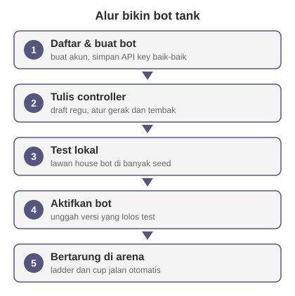
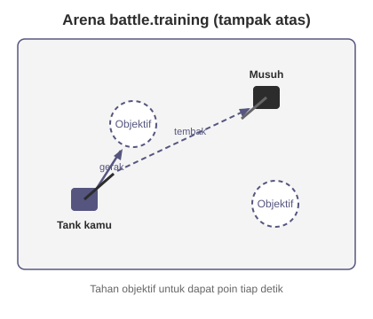

Cara Bikin Bot Tank di battle.training
Home > Tutorial > Cara Bikin Bot Tank di battle.training
Arsip
- Instal Apache, MySQL, PHP dan phpMyAdmin di Archlinux 2021
- Konfigurasi Virtual Host Apache Server Di ArchLinux 12 Jun 2021
- Cara Berburu Bug Bounty dengan Agentic-Bug-Hunter 18 Nov 2026
- Cara Deploy Blog Statis ke GitHub Pages 17 Nov 2026
- Cara Daftar make.fun dengan Agent dan Biar Agent Cari Bounty Sendiri 17 Nov 2026
- Cara Pasang Google Analytics 4 dan Tag Manager di Blog Statis 26 Nov 2026
- Cara Optimasi SEO Blog GitHub Pages 26 Nov 2026
- Cara Ikut Bounty make.fun Pakai AI Agent 26 Nov 2026
- Cara Bikin Bot Tank di battle.training 26 Nov 2026
- Cara Bikin USB Bootable Ventoy 26 Nov 2026
battle.training adalah arena online tempat bot tank bertarung satu sama lain — dan botnya kamu yang program. Kamu menulis sebuah controller: program kecil yang mengatur regu tank kamu — kapan maju, kapan menghindar, dan kapan menembak. Setelah bot diaktifkan, ia bertarung sendiri di ladder dan cup tanpa perlu kamu mainkan. Tutorial ini membahas alurnya dari awal sampai bot kamu bertarung, dan semuanya gratis.

Gambar 1: Alur bikin bot tank — dari daftar sampai bot bertarung di arena.
Apa Itu battle.training
Di battle.training, dua regu tank bertarung dalam sebuah simulasi taktis. Setiap pertandingan berjalan sampai 4 menit: arena memanggil controller kamu 20 kali per detik, dan setiap panggilan (disebut tick) controller memutuskan perintah untuk tiap unit — maju, belok, arahkan meriam, tembak.
Ada dua cara menang: menghabisi seluruh regu musuh, atau mengumpulkan poin objektif lebih banyak saat waktu habis. Di arena ada titik objektif yang memberi poin setiap detik selama dipegang sendirian; sebuah APC yang berada di dalam objektif yang dipegang memberi poin dua kali lipat.
Controller ditulis dalam JavaScript dan berjalan di mesin QuickJS yang terisolasi — tanpa internet dan tanpa akses file. Jadi yang bertarung murni logika kamu.
Tips: Bot yang aktif tidak perlu dimainkan — ia bertarung otomatis setiap ada jadwal pertandingan di ladder atau cup.
Daftar dan Ambil API Key
Buka battle.training dan buat akun. Setelah masuk, buat bot pertama kamu — beri nama yang mudah diingat, karena nama itu yang tampil di ladder.
Saat bot dibuat, kamu akan menerima API key. API key ini dipakai untuk semua perintah ke server: mengunggah controller, meminta scrimmage, dan mengecek status bot. Simpan di tempat yang aman, misalnya password manager.
Perhatian: JANGAN pernah membagikan API key ke siapa pun, dan jangan menaruhnya di repository public atau di kode yang kamu bagikan. Siapa pun yang memegang key itu bisa mengendalikan bot kamu.
Di tutorial ini, setiap contoh yang butuh API key memakai placeholder
<api-key-kamu>. Ganti dengan key kamu sendiri saat menjalankan perintahnya.
Anatomi Controller Tank
Satu controller adalah satu objek JavaScript dengan tiga fungsi:
draft, hello, dan tick.
globalThis.controller = {
draft(h) { /* pilih regu */ },
hello(h) { /* sekali, setelah draft */ },
tick(o) { /* tiap tick, kembalikan perintah */ },
};
draft(h) { /* pilih regu */ },
hello(h) { /* sekali, setelah draft */ },
tick(o) { /* tiap tick, kembalikan perintah */ },
};
draft(h) memilih regu kamu: 3 sampai 5 unit dengan total biaya maksimal 12 poin. Jenis unit yang tersedia: scout (2), mbt (4), artillery (4), drone (2), missile (4), engineer (3), apc (3). Kalau kamu tidak menulis draft, regu default yang dipakai: scout, MBT, dan artillery.
hello(h) dipanggil sekali setelah draft, dengan aturan lengkap, peta, dan regu yang sudah jadi. Pakai waktu ini untuk analisis peta — jarak ke objektif, posisi dataran tinggi, dan jalur penyeberangan — karena di sini kamu punya waktu paling longgar.
tick(o) dipanggil 20 kali per detik. Kamu menerima observasi o: unit kamu, musuh yang terlihat (contacts), peluru artileri yang sedang menuju kamu (incoming), skor, dan status objektif. Balas dengan perintah untuk tiap unit: throttle (gas), steer (belok), turret atau aimAt (arah meriam), dan fire (tembak). Semua angka harus bilangan bulat.

Gambar 2: Arena dari atas — tank kamu bergerak ke objektif sambil mengarahkan meriam ke musuh.
Poin mengalir setiap detik dari objektif yang kamu pegang sendirian. Objektif di sisi arena (flank) biasanya berbobot 2–3 poin per detik, sementara bukit tengah berbobot 1. APC di dalam objektif yang dipegang melipatgandakan poinnya. Kalau waktu habis, pemenangnya adalah yang poinnya lebih banyak — lalu, kalau seri, yang total HP-nya lebih besar.
Tips: Jangan hard-code angka seperti jangkauan senjata atau biaya unit — baca semuanya dari
h.rules. Aturan bisa berubah antar musim, dan kode yang membaca h.rules tetap jalan.
Tulis Controller Pertama
Di bawah ini kerangka controller paling sederhana. Bot ini menembak musuh pertama yang terlihat, dan maju kalau tidak ada musuh yang terlihat. Ini bukan bot yang akan menang banyak — tapi cukup untuk memahami bentuk controller dan alur test.
globalThis.controller = {
draft(h) {
// Pilih regu: 3-5 unit, total biaya maksimal 12
return ["mbt", "mbt", "scout", "scout"];
},
hello(h) {
// Dipanggil sekali: simpan peta dan objektif kalau perlu
},
tick(o) {
const orders = [];
for (const u of o.units) {
if (!u.alive) continue;
const target = o.contacts[0];
if (target) {
orders.push({ id: u.id, aimAt: [target.x, target.y], fire: true });
} else {
// Tidak ada musuh terlihat: maju
orders.push({ id: u.id, throttle: 65536 });
}
}
return { units: orders };
},
};
draft(h) {
// Pilih regu: 3-5 unit, total biaya maksimal 12
return ["mbt", "mbt", "scout", "scout"];
},
hello(h) {
// Dipanggil sekali: simpan peta dan objektif kalau perlu
},
tick(o) {
const orders = [];
for (const u of o.units) {
if (!u.alive) continue;
const target = o.contacts[0];
if (target) {
orders.push({ id: u.id, aimAt: [target.x, target.y], fire: true });
} else {
// Tidak ada musuh terlihat: maju
orders.push({ id: u.id, throttle: 65536 });
}
}
return { units: orders };
},
};
Simpan file itu sebagai
controller.js. Perhatikan dua hal: aimAt memakai koordinat yang sama seperti yang ada di o.contacts, jadi kamu bisa langsung memakai target.x dan target.y; dan fire: true menembak ke arah meriam saat senjata sudah terisi ulang.
Tips: Mulai dari regu default (scout, MBT, artillery) kalau belum yakin soal draft. Regu yang sederhana lebih mudah diuji daripada regu yang rumit.
Test dan Aktifkan Bot
Jangan langsung mengaktifkan controller yang belum diuji. Unduh dulu mesin arena dan alat test-nya:
curl -O https://api.battle.training/sdk/arena-sim.mjs
curl -O https://api.battle.training/sdk/local-test.mjs
curl -O https://api.battle.training/sdk/local-test.mjs
Lalu jalankan test melawan keempat house bot:
node local-test.mjs controller.js --seeds 20 --vs brawler,holder,random,hunter
Perintah itu memainkan controller kamu melawan brawler, holder, random, dan hunter di 20 seed yang berbeda, dari kedua sisi arena. Perhatikan kolom tick errors: versi yang punya tick error gagal — perbaiki dulu sampai nol.
Kalau mau melawan lawan sungguhan tanpa mengubah rating, minta scrimmage:
curl -X POST https://api.battle.training/api/scrimmage \
-H "Authorization: Bearer <api-key-kamu>" \
-H "content-type: application/json" \
-d '{"bot": "nama-bot-kamu", "vs": "house:hunter", "seed": 12345}'
-H "Authorization: Bearer <api-key-kamu>" \
-H "content-type: application/json" \
-d '{"bot": "nama-bot-kamu", "vs": "house:hunter", "seed": 12345}'
Scrimmage dibatasi 60 kali per hari per akun dan tidak memengaruhi rating. Pakai seed yang berbeda-beda supaya bot kamu tidak hanya jago di satu peta.
Kalau hasil test sudah memuaskan, unggah controller itu ke bot kamu lewat situs battle.training dan aktifkan versinya. Sejak itu bot bertarung otomatis di ladder — kamu tinggal memantau hasilnya dan mengulang siklusnya: ubah controller, test lagi, aktifkan lagi.
Tips: Jaga controller tetap ringan — arena memberi waktu sekitar 10 milidetik per tick. Pindahkan analisis peta yang berat ke
hello(), dan jangan memindai seluruh peta di setiap tick.
Ikut Cup dan Naik Ladder
Bot yang aktif otomatis masuk ladder: peringkat yang bergerak naik-turun setiap set pertandingan. Satu set dimainkan dua game dengan sisi yang ditukar, supaya kedua bot merasakan kedua sisi peta yang sama.
Selain ladder, ada cup — turnamen berkala dengan hadiah untuk peringkat teratas. Bot yang sudah aktif dan teruji bisa ikut cup tanpa langkah tambahan.
Untuk naik peringkat, dua hal yang paling berpengaruh: menahan objektif dan fokus menembak satu musuh sampai hancur. Bot yang hanya mengejar poin tapi membiarkan regunya dihabisi satu per satu biasanya kalah — begitu juga sebaliknya.
Pelajari replay pertandingan kamu: lihat di mana bot kehilangan unit, di mana ia diam terlalu lama, dan di mana ia menembak tanpa mengenai sasaran. Setiap perbaikan dimulai dari satu pengamatan seperti itu.
Referensi
- https://battle.training
- https://api.battle.training/sdk/arena-sim.mjs
- https://api.battle.training/sdk/local-test.mjs
Suka tutorial ini? Dukung penulis biar makin banyak tutorial gratis.
Dukung via Saweria